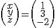

Cada sistema

tiene asociadas las matrices
Luego el sistema es: A·X=B
Ejemplo:
Entonces las operaciones elementales serían:
–Cambiar dos filas: Fi ↔ Fj
–Sustituir una fila por una combinación lineal de filas:
Fi↔ k1F1+k2F2+…+kiFi+…kmFm, ki ≠ 0, kj son números reales, j = 1, 2, ….m
El hecho de que un sistema se pueda representar en forma matricial implica que también se puede resolver como si fuera una ecuación matricial.
Ejemplo:
Ejercicios
1.- Escribe en forma matricial estos sistemas:
2.- Resuelve matricialmente el sistema:
\left\{ \begin{align} & x+y+z=2 \\ & x-y=-2 \\ & 2y+3z=0 \\ \end{align} \right.
Soluciones:
1.-
2.-

\left( \begin{matrix} x \\ y \\ z \\ \end{matrix} \right)=\left( \begin{matrix} 1 \\ 3 \\ -2 \\ \end{matrix} \right)